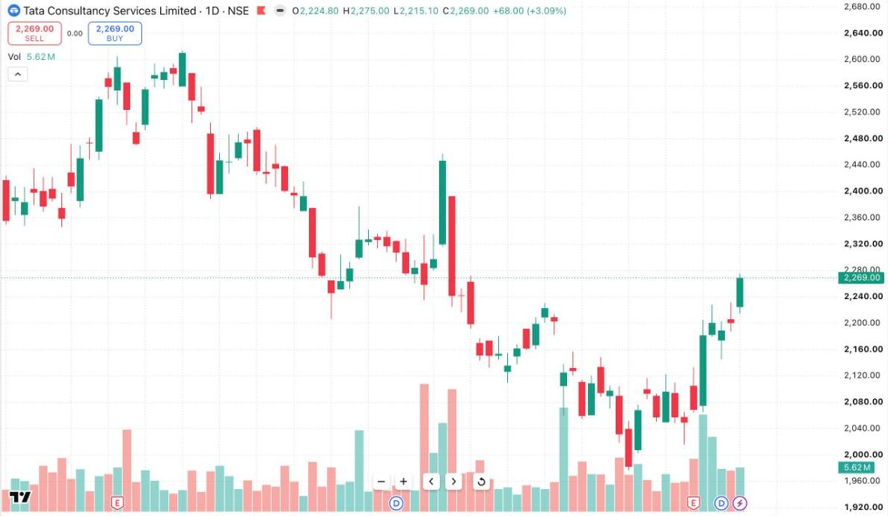

How News & Events Move Price
In Lesson 01 you learned that markets trade on surprise, not facts. This lesson turns that idea into a working framework — because event-driven moves (results, RBI and Fed decisions, budgets, geopolitics, crude and gold shocks) are where the biggest opportunities and the fastest account damage live.
The only equation that matters
Market reaction = Reality − Expectation. Not reality alone. Before any scheduled event, thousands of participants have already positioned according to what they expect. The expected outcome is therefore already in the price — traders say it's "priced in" or "discounted". When the announcement lands, the market doesn't react to whether the news is good; it reacts to whether the news is better or worse than what was already paid for.
This is why a company can report a large profit and fall 5%: the market had paid for an even larger one. And why a stock can rally on a weak result: the market had braced for disaster and got mere disappointment.
The second layer: positioning
Reaction size depends on who's caught on the wrong side. If "everyone" is positioned bullish going into an event, even a mildly disappointing outcome triggers a rush for the exit — there's nobody left to buy and a crowd needing to sell. The most violent moves happen not when news is most extreme, but when positioning is most one-sided. Ask before every event: what is the crowd expecting, and how are they positioned? The more lopsided the answer, the more dangerous — and the more explosive — the reaction.
Three ways price digests an event
- Repricing (gap and go): the outcome is far from expectations; price jumps to a new level and keeps moving as positions adjust all day. Fighting this move — "it's gone up too much" — is how beginners get hurt.
- Sell-the-news fade: the outcome matches expectations; those who positioned early take profits, and price reverses the pre-event drift.
- Whipsaw: the headline says one thing, the details say another (a good profit number but weak guidance, a rate cut with a hawkish statement). Price spikes both directions within minutes. This is why professionals rarely trade the first candle after a major release.
A simple pre-event routine
1. WHAT is expected? (consensus, not your opinion)
2. WHAT has price already done into the event? (run-up = optimism paid for)
3. WHERE are the structural levels that would confirm/deny a real move?
4. DECIDE now: trade the reaction, or stand aside?
5. If trading: size smaller — event volatility widens stops.
Point 4 deserves emphasis: standing aside is a position. Holding a leveraged position through a binary event is not analysis, it's a coin flip with your account. Many professionals make their money on the day after the event, trading the cleaner second move once the whipsaw has flushed out the impatient.

KEY TAKEAWAYS
- Reaction = reality minus expectation. The expected outcome is already in the price.
- One-sided positioning, not extreme news, produces the most violent moves.
- Expect one of three digestion patterns: repricing, sell-the-news, whipsaw.
- Have a written pre-event routine — and remember that flat is a position.
PRACTICE THIS WEEK
Pick one upcoming scheduled event (a company's results, an RBI announcement). Write down the consensus expectation and how price has behaved in the week before. After the event, write what happened versus expectation and which of the three patterns played out. Five of these write-ups will teach you more than fifty random trades.
Event-driven trading is a core module of the Professional Trader Program
Results, macro data, geopolitics — taught live as events unfold, with the Zyvora Terminal's news archive.
Request Program Details